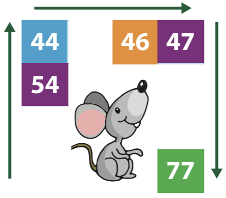
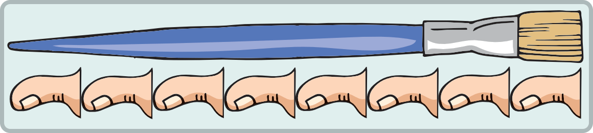
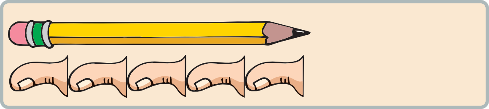
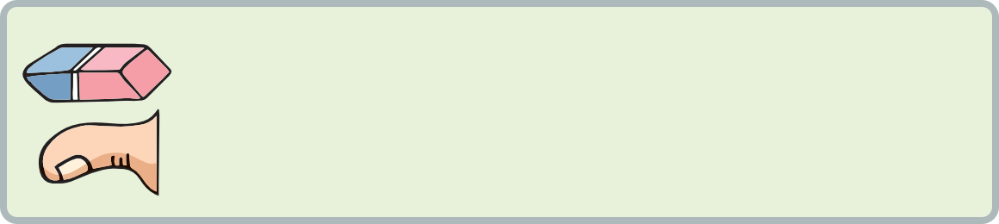
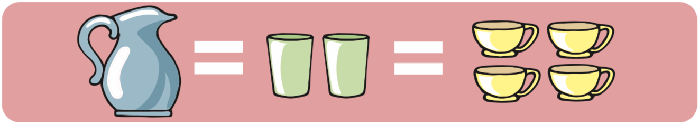

2º
Matemáticas
{{option.o}}
21.
Escribe los números que faltan en los recuadros.

22.
Escribe los números que faltan en las siguientes sumas.
23.
Escribe el número de pulgares que corresponden a la longitud de cada objeto.



25.
Observa la imagen y escribe los números que faltan en cada oración.

Te falta contestar las siguientes preguntas: